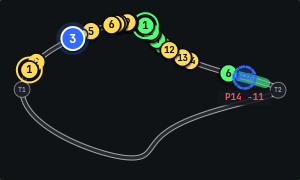
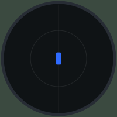
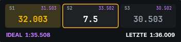
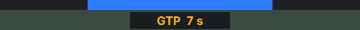
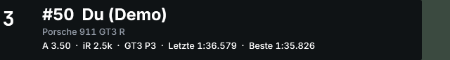

Relative
Who is ahead of you and behind you, with iRating forecast, licence, class colour and lap status. When a faster prototype closes in from behind, the row shows a warning.
Overlays and Setup Garage for iRacing
Relative, standings, race engineer with fuel traffic light, track map, radar, weather and more. Built by a sim racer for the community, free, with no ads and no account.




Only what you need – everything technical in pro mode
Available now – update at the press of a button
From version 1.0 Garage Overlay is called Pitlay: new name, new icon, same idea. Overlays that tell you what you need to know in the race, and a Setup Garage that shows you where the time is after the session.
If you already use it, nothing bad changes: the update comes at the press of a button in the control window, and your settings, profiles and positions stay as they are.
Latest additions
Each one can be switched on or off, moved, resized and given its own font size
Who is ahead of you and behind you, with iRating forecast, licence, class colour and lap status. When a faster prototype closes in from behind, the row shows a warning.
The whole field by class, with SoF per class, gap, interval, fastest lap in purple and pit status. Before the start it shows the real order on track.
Three cards, one decision: a fuel traffic light, pit window with Now or Missed, undercut maths against the car ahead. Plus the reserve it calculates with.
The track in its true aspect ratio, with turn numbers, start/finish line and every car in class colour. Records itself the first time you drive it.

Track and air temperature, wind ring with direction, humidity, wetness bar and, in the rain, the tyre call: slicks, borderline or wets, with a look at what the field is on.

Cars alongside you on a disc, red warning zones left and right. Appears only when someone is close, then goes away again.

A box per sector: purple for best, green for faster than last lap, yellow for slower. The ideal lap underneath.

Time against your best lap as a bar with trend, big enough to catch from the corner of your eye.

Throttle, brake, steering and clutch as traces, plus pedal bars, gear with shift light and speed.

A slim bar under the mirror that fills up as the faster prototype gets closer. Drag its length and thickness so it fits exactly.

Start lights with five lamps, yellow, blue, black and white, chequered. Shows up when it matters.

As a standalone module if you don't want the race engineer: tank, consumption, remaining to the finish, borderline with seconds.
Gear, rev bar, speed, lap time with delta, time left, fuel and the car's driver controls such as brake bias, TC and ABS.

Only appears in the pit lane: metres to your box, speed against the limit, limiter hint and, at the exit, the signal when you can go full throttle again.

Short messages when it matters: slowdown, slow car ahead, telemetry recording off.
One card per question: fuel, pit, strategy
The fuel traffic light tells you whether you make it to the finish. Green: enough. Orange: borderline, one lap more or less is possible, with the seconds that decide it. Red: stop needed, with the amount you have to add. In a multi-class race it calculates against the overall leader, because that car decides when the race ends, and says so.
The pit card shows the window in which you can stop, service time, time lost in the pit lane and the position you rejoin in. The strategy card runs the undercut against the car ahead and the car behind: works, falls short, or danger.
If you prefer single modules, switch on fuel, pit and strategy as overlays of their own.

Reads your telemetry and tells you what is wrong with the setup
The Setup Garage runs alongside the overlay and analyses every new telemetry file from iRacing automatically. It shows where the time is, detects oversteer and understeer from the data and suggests clicks on the setup, with rules per car so no suggestion lands outside what the car allows.
It never modifies your setup files. You get the suggestion, iRacing stays yours.
Overlays in your stream and a tool that takes work off your hands



Like a setup sheet: what's in it and what it costs
| Area | Feature | Status |
|---|---|---|
| In the race | Relative, standings, track map, radar, traffic bar | Free |
| In the race | Race engineer: fuel traffic light, pit window, undercut | Free |
| In the race | Fuel, pit, pit helper, race flags, warnings | Free |
| In the race | Weather with tyre advice, dashboard | Free |
| Practice | Delta, sectors with ideal lap, inputs | Free |
| After the session | Setup Garage: handling diagnosis, setup ladder, before/after, driving coach | Free |
| Program | Profiles per session type, wheel buttons, power-save mode, fonts and colour presets | Free |
| Program | iRacing update check: tells you when an iRacing update changes values | New, free |
| Stream | OBS browser sources, chat overlay for Twitch and YouTube | Free |
| Team | Team fuel: the fuel calculator keeps going while a teammate drives | With sub |
| Team | Stint planner with a plan code for the team and a stint overlay | With sub |
| Stream | OBS automation: scenes, clips, YouTube chapters | With sub |
| Stream | Broadcast overlays for league streams | With sub |
What is already in and what comes next
Bug report in one click, fuel measured line to line only, overlays without a brief reload. Update at the press of a button, settings stay.
Team fuel, the stint planner, OBS automation and broadcast overlays are unlocked for subscribers – without you reinstalling anything.
Bugs and wishes from the community go into the next updates.
What costs and what doesn't
No ads, no account.
Unlocked right after signing in, no reinstall.
Subscribe to twitch.tv/chrisseitz.
In Pitlay, click “Sign in with Twitch” under “Stream”.
Confirm the code in your browser. No password, no account with us.
What the program needs, what it costs and what it never does
Windows 10 or 11 and iRacing. The overlay reads iRacing's live interface, the same one every overlay program uses. No account, no sign-up, no recording required. On start it finds iRacing by itself and waits until you are in the car.
Little. The overlay runs at low priority, so iRacing always gets CPU time first. Telemetry is read at most 30 times per second, each overlay draws only 5 to 15 times per second. The bottom of the control window shows how many milliseconds per second it currently uses. If you run iRacing at the limit, switch on power-save mode.
Yes. The Setup Garage is a separate program and only runs when “Start Setup Garage too” is ticked. Without the tick you get the overlays alone, with no analysis and no second process. The other way round works as well: garage on, all overlays off.
It never modifies a setup file and changes nothing in iRacing. Only when you click “Get” in the team hub does it copy a teammate's setup, unchanged, into your iRacing folder. It uploads nothing: telemetry, analysis and settings stay on your PC. It only goes online to check GitHub for updates and, if you switch it on, for the Twitch or YouTube chat.
No sign-up, no account
Download GarageOverlay-Setup.exe and run it. It needs no admin rights and installs to %LOCALAPPDATA%. If Windows objects on first launch because the file is not signed: “More info”, then “Run anyway”.
The overlay finds iRacing by itself. Set iRacing to “Borderless Window” so the overlays sit cleanly on top of the game. In the control window you pick what you want to see.
Ctrl+Shift+O lets you drag the overlays into place, mouse wheel or corner changes the size, the edges change width and height. Profiles switch automatically between practice, qualifying and race. Updates come through the app itself.
What people ask most
Nothing. Everything for driving stays free, with no ads and no required subscription. As a thank-you there are extras for subscribers of twitch.tv/chrisseitz: team fuel, stint planner, OBS automation and broadcast overlays. To help without Twitch: ko-fi.com/chrisseitz. The source code is open (MIT licence).
No. Low process priority, telemetry at most 30 times per second, overlays 5 to 15 times per second, and in GPU mode Windows handles the transparency. The status line in the control window shows the measured load. If you still see stutter, switch on power-save mode and send the log, and we'll have a look.
Yes. The Setup Garage can be switched off (Start → General → “Start Setup Garage too”). The overlays need no recording, they only read the live data iRacing provides anyway.
After each session it reads the telemetry file iRacing writes by itself and shows you where the time is, whether the car oversteers or understeers and which click on the setup helps. All on your PC, no internet. Applying the suggestion in iRacing is up to you.
Yes. Every overlay is available as a browser source for OBS, the address is shown in the control window next to each overlay. That way an overlay can run in the stream only, without sitting on your screen.
No. Neither the overlay nor the Setup Garage writes to iRacing files. The garage reads telemetry and makes suggestions, applying them in iRacing is up to you.
The overlay checks for a new version when you open the control window and once an hour, and installs it at the press of a button. The installer runs through and the overlay restarts afterwards.
A screenshot and one sentence are enough, ideally with overlay.log from the log folder (link at the bottom of the control window). Either on GitHub under Issues or directly on Discord.